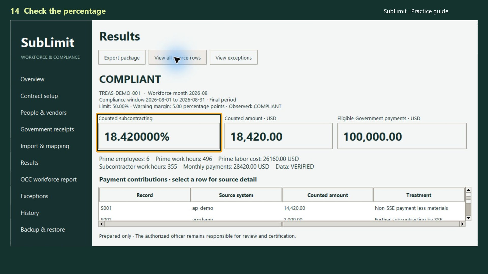

SOFTWARE WORKFLOW · SUBLIMIT
Similarly Situated Entity Tracking for Federal Contractors
For small-business federal contractors monitoring subcontracting limits: keep the evidence supporting subcontractor treatment alongside the calculation. SubLimit helps your team work from traceable records rather than an unexplained spreadsheet label.
Try SubLimitConfirm the contract rule before calculating
Review the clause incorporated into your contract, the applicable contract category, and the compliance period. Under FAR 52.219-14, similarly situated treatment depends on the specified size and program-status requirements. Being a small business by itself does not establish every requirement. Read the current clause and resolve contract-specific questions with the appropriate adviser or contracting officer.
Keep a status evidence record
For each relevant subcontractor, retain its identity, the basis for the treatment used, the evidence reviewed, and the review date. Keep an unresolved classification visible as an open item instead of assuming that an unverified subcontractor qualifies. Retain support for any excluded amounts as well.
Connect status to the payment records
Use the records for the applicable compliance period and trace the included amounts to supporting transactions. The current clause also addresses work a similarly situated entity further subcontracts. A status label at the first tier should not erase the need to understand the work and payments behind it.
Review changes before the period ends
Check new subcontractors, changed status evidence, missing receipts, and unallocated payments during the period. SubLimit calculates from the records you supply and prepares a traceable output. Monthly monitoring can surface questions earlier; it does not change the compliance period in the contract or certify compliance automatically.

Example evidence review
Illustrative review worksheet — fictional records. This explains the workflow; it is not a screenshot or a generated product report.
| Record | What the reviewer sees | Next action |
|---|---|---|
| Subcontractor A | Program-status evidence missing | Obtain and review applicable evidence |
| Payment INV-104 | Payment has no assigned period | Confirm the contract period |
| Subcontractor B | Status evidence date precedes change | Review current eligibility before treatment |
Questions before you start
Is every small-business subcontractor similarly situated?
No. Apply the size and program-status requirements in the applicable clause and retain the supporting evidence.
Is a workforce hours report the same as the subcontracting-limit calculation?
No. Keep workforce reporting and the applicable payment-based calculation distinct, even when some source records overlap.
Does SubLimit make the legal determination for my contract?
No. The software supports calculation and record preparation. Your team must confirm applicability, classifications, exclusions, and the reporting period.
See the workflow in context
- Read the main workflow guide
- Use the subcontracting-limit calculator
- Understand the separate workforce workflow
Official reference
Does a similarly situated subcontractor count toward the limit?
Under FAR 52.219-14, check the applicable program status and small-business size under the NAICS code assigned to the subcontract. Work further subcontracted by that entity counts toward the limitation. Retain evidence for both the first-tier classification and further subcontracting.
Example: separate the two tiers
Suppose a verified similarly situated subcontractor receives $30,000 and further subcontracts $8,000 of that work. Do not simply exclude the entire $30,000. Track the $8,000 separately and prevent counting it twice. This is a fictional illustration, not an eligibility decision.
Enter a classified payment example or watch the evidence-review workflow.